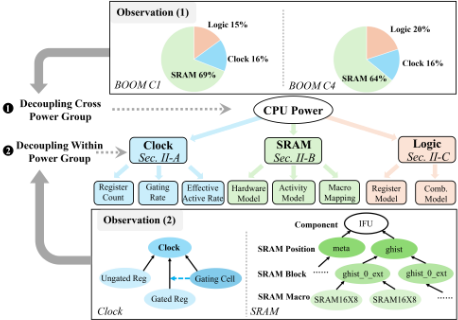
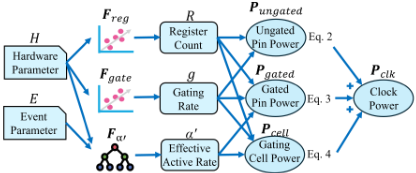
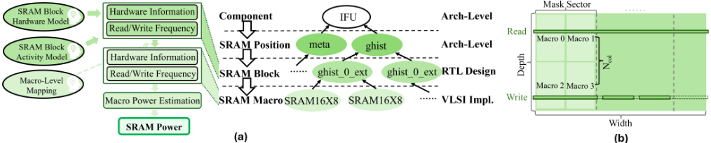
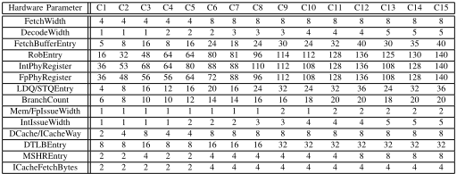
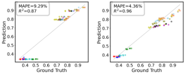
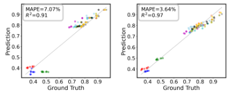
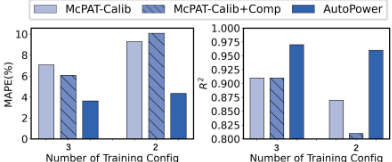
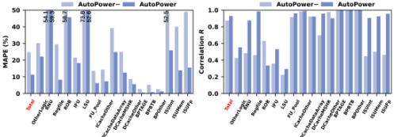
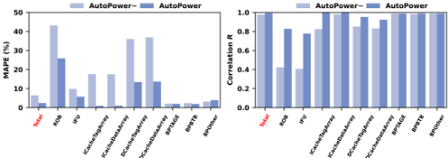

AutoPower：基于功耗组解耦的自动化少样本（Few-Shot）架构级功耗建模
论文解决 CPU 微架构早期设计中架构级功耗评估慢且不准的问题：标准 VLSI 功耗评估流程（RTL 仿真、逻辑综合、功耗仿真）耗时数周，McPAT/Wattch 等分析模型对新架构误差不可接受，而 ML 功耗模型又需要大量带 golden 标签的训练配置，工程上不可行。AutoPower 基于两个观察（时钟与 SRAM 主导处理器功耗、其功耗与架构级可见的结构信息相关）提出功耗组解耦：将建模拆为 clock、SRAM、logic 三组，组内再解耦为多个简单子模型，例如时钟建模首次在架构级显式考虑 clock gating，拆为寄存器数、gating rate 与有效活跃率三个预测子模型；SRAM 采用 Component→SRAM Position→SRAM Block→SRAM Macro 四层层次结构，配合基于 scaling pattern 的硬件模型与 XGBoost 活跃度模型。在 RISC-V BOOM 的 15 个配置、TSMC 40nm 流程上，仅用 2 个已知配置训练即达到 MAPE 4.36%、R² 0.96，比 McPAT-Calib 的 MAPE 低 5%、R² 高 0.09。该方法对团队 IP 架构早期 PPA 评估与 AI 辅助建模自动化有方法学借鉴价值，但论文验证对象是 CPU 而非存储/互连 IP。
CPU 微架构早期优化需要快速且准确的架构级功耗评估，但标准功耗评估流程需数周，严重阻碍早期微架构优化与设计空间探索；McPAT、Wattch 等解析模型难以反映新代处理器设计，直接使用误差不可接受，且需针对每个目标架构大量人工修改；已有 ML 架构级功耗模型（如 McPAT-Calib）需要大量带 golden 功耗标签的样本训练，而标签获取耗时、可用配置数量有限。论文目标是实现完全自动（无需工程师定义的设计特定解析模型）且少样本（极少已知配置即可高精度）的架构级功耗建模。
AutoPower 仅以硬件参数（如 DecodeWidth、ICacheWay）与事件参数（来自 gem5 等架构级性能模拟器）为输入，基于两个关键观察实施功耗组解耦：(1) 跨功耗组建独立模型，分为 clock、SRAM、logic 三组；(2) 组内按各组结构特点进一步解耦为多个子模型。时钟模型将功耗解耦为 ungated pin power、gated pin power 与 gating cell power，用线性 L2 正则化模型预测寄存器数与 gating rate、用 XGBoost 预测有效活跃率；SRAM 模型提出四层层次结构（Component→SRAM Position→SRAM Block→SRAM Macro），用基于 capacity scaling/throughput scaling 两种 scaling pattern 的硬件模型自动拟合 SRAM Block 的 width/depth/count，XGBoost 活跃度模型预测读写频率（并引入不受性能模拟器误差影响的 program-level 特征），再经 macro-level mapping 结合工艺库功耗参数计算功耗；逻辑功耗拆为寄存器功耗（硬件模型×活跃度模型）与组合逻辑功耗（稳定功耗+变化量两个子模型）。训练仅需 2-3 个已知配置的 golden 功耗及从网表/RTL 仿真提取的标签。
仅用 2 个已知配置训练：整体 MAPE 4.36%、R² 0.96；相比 McPAT-Calib，MAPE 低 5%、R² 高 0.09
2/3 个训练配置场景下：最高 R² 分别为 0.96/0.97（平均比 McPAT-Calib 的 0.87/0.91 高 0.07），最低 MAPE 分别为 4.36%/3.64%（平均比 McPAT-Calib 的 9.29%/7.07% 低 4.2%）
时钟功耗模型：2 个训练配置下 MAPE 11.37%、相关系数 R 0.93；寄存器数与 gating rate 预测平均 MAPE 6.93%
SRAM 功耗模型：2 个训练配置下 MAPE 7.60%、R 0.94；SRAM Block 硬件信息（width/depth/count）预测 MAPE 接近 0
细粒度时间功耗 trace 预测（时间步长 50 cycles，数百万 cycles 的 GEMM/SPMM 负载）：仅用 2 个配置训练即可取得低 MAPE，无需额外时间维度功耗数据调优
实验平台：RISC-V BOOM CPU 15 个配置、8 个 riscv-tests 负载（dhrystone、median、multiply、qsort、rsort、towers、spmv、vvadd）、Chipyard v1.8.1 生成 RTL、Synopsys VCS/Design Compiler/PrimePower、TSMC 40nm 标准单元库与 Memory Compiler、gem5 收集事件参数
与 McPAT/Wattch 等需工程师针对特定架构手工构建与修改的解析模型不同，AutoPower 完全自动化、无需任何工程师定义的设计特定解析功耗模型；与 McPAT-Calib 等数据饥渴的 ML 功耗模型不同，AutoPower 通过功耗组解耦与结构感知子模型将训练数据需求降到 2-3 个配置。具体新点包括：首个在架构级显式建模 clock gating 的架构级功耗模型（寄存器数/gating rate/有效活跃率三子模型）；基于 capacity/throughput scaling pattern 自动拟合 SRAM Block 硬件信息的硬件模型，以及四层 SRAM 层次结构与 macro-level mapping；在 ML 特征中引入不受性能模拟器误差影响的 program-level 特征。
相关度级别：medium
命中能力域：2.1 IP 架构与微架构 | 2.7 EDA/验证自动化与 AI 辅助
理由：论文核心是 CPU（BOOM）架构级功耗建模，不涉及团队的存储/互连 IP 协议设计、RTL 实现或 UVM/formal/时序物理实现等技术栈，故不构成对任何能力域核心技术的直接命中。但其方法学与团队能力域存在交集：面向 PPA 的架构权衡与 workload-driven 建模（2.1）——少样本架构级功耗评估可支撑 IP 早期设计空间探索；AI 辅助 EDA 自动化（2.7）——功耗组解耦+少样本 ML 校准是一套可复用的自动化建模方法学。对 SRAM 占比高的存储控制器类 IP，其 SRAM 层次建模与 macro-level mapping 思路亦有参考价值，但需针对 IP 功耗构成（如 PHY/I/O 主导）重新设计功耗组划分，因此定为 medium。
建议动作：作为方法参考存档
arXiv:2508.12294v1 [cs.AR] 2025年8月17日
Qijun Zhang, Yao Lu, Mengming Li, Zhiyao Xie *
香港科技大学
{ qzhangcs, yludf, mengming.li } @connect.ust.hk, eezhiyao@ust.hk
摘要 - 功耗效率是现代 CPU 设计中的一项关键设计目标。架构师需要一种快速且准确的架构级功耗评估工具来执行早期阶段的功耗估算。然而，传统的解析式架构级功耗模型并不准确。近期提出的基于机器学习（ML）的架构级功耗模型需要来自已知配置的充足数据进行训练，这使其不切实际。
在本工作中，我们提出了 AutoPower，旨在利用有限的已知设计配置实现全自动的架构级功耗建模。我们有两个关键观察：（1）时钟和 SRAM 主导了处理器的功耗；（2）时钟和 SRAM 功耗与架构级可获取的结构信息相关。基于这两个观察，我们在 AutoPower 中提出了功耗组解耦。首先，AutoPower 跨功耗组进行解耦，为每个组构建单独的功耗模型。其次，AutoPower 通过将模型进一步解耦为每个功耗组内的多个子模型来设计功耗模型。在我们的实验中，即使仅有两个已知配置用于训练，AutoPower 也能实现低至 4.36% 的平均绝对百分比误差（MAPE）和高达 0.96 的 R 2。与代表性的基于 ML 的功耗模型 McPAT-Calib 相比，其 MAPE 降低了 5%，R 2 提高了 0.09。
功耗效率是现代中央处理器（CPU）设计中的关键设计目标，而其优化依赖于高效的功耗评估。然而，随着处理器复杂度的不断提升，标准超大规模集成电路（VLSI）功耗评估流程所需的时间日益增加。标准功耗评估流程需要经历寄存器传输级（RTL）实现、RTL 仿真、逻辑综合和功耗仿真 [1]。完成这样一次功耗评估流程可能需要数周时间，严重阻碍了早期的微体系结构优化和设计空间探索。架构师需要一种快速且准确的体系结构级功耗评估方法，以支持 CPU 微体系结构的早期优化。
解析功耗模型：诸如 McPAT [2] 和 Wattch [3] 等经典的体系结构级功耗模型是由工程师针对特定类型处理器 1 设计的解析模型 [4]。然而，随着处理器架构的不断更新，解析功耗模型难以反映新处理器的设计。正如许多研究所指出的 [4]-[6]，将 McPAT 直接应用于新一代 CPU 会带来不可接受的误差 [4]。因此，通常需要针对每个目标架构对 McPAT 进行修改，这需要巨大的工程投入和时间开销。
基于机器学习（ML）的功耗模型：近年来，基于 ML 的体系结构级功耗模型 [6], [7] 通过训练来基于硬件参数和事件参数预测 CPU 功耗。然而，训练一个准确的基于 ML 的模型需要大量带有黄金功耗标签的样本。在实践中，通过标准功耗评估流程来收集黄金功耗标签非常耗时。更重要的是，可用配置的数量也是有限的。因此，这些数据饥渴型的基于 ML 的模型并不适用于真实的工程场景。一些近期的 ML 工作 [4] 提出通过统一解析模型与基于 ML 的模型来减少所需的训练数据。然而，[4] 依赖于解析资源函数，这些函数与设计相关，且高度依赖架构师的专业知识。因此，目前仍然缺乏一种仅需有限已知设计配置即可用于训练的全自动功耗建模方法。
* 通讯作者
1 工程师仔细分析各组件在相关事件发生时的硬件行为，以推断硬件电路的活动情况，然后利用自身经验和实验数据来估计组件在相关事件发生时的功耗。

目标：本工作提出了我们命名为 AutoPower 2 的新解决方案，实现了全自动且少样本（few-shot）的体系结构级功耗建模。1）全自动：该功耗建模方法不需要任何由工程师定义的、针对特定设计的解析功耗模型。2）少样本：该模型仅需非常有限的已知配置用于训练即可实现高精度。如图 1 所示，我们的解决方案最初基于两个关键观察：
2 该工作已开源，地址为 https://github.com/hkust-zhiyao/AutoPower
由 SRAM 主导的结构（例如表和队列）。每个 SRAM Position 由多个将在 RTL 实现中定义的 SRAM Block 组成。SRAM Block 则由工艺节点库（即 SRAM compiler）所支持的 SRAM Macro 构成。
AutoPower 中的功耗组解耦：（1）受我们第一个观察结果的启发，AutoPower 在各功耗组之间对功耗模型进行解耦，为包括时钟、SRAM 和逻辑在内的不同功耗组构建各自的功耗建模方法。（2）受我们第二个观察结果的启发，在每个功耗组内部，AutoPower 基于我们观察到的各功耗组的独特模式，进一步将建模解耦为多个子模型。
如图 1 所示，AutoPower 为每个功耗组采用创新的功耗建模方法。（1）对于时钟，AutoPower 是首个显式考虑时钟门控（clock gating）的架构级功耗模型，时钟门控是一种能显著降低时钟功耗的不可或缺的优化技术。基于时钟功耗的结构，它提出将时钟功耗建模解耦为对寄存器数量、门控率以及我们预定义的有效活跃率（effective active rate）的预测。（2）对于 SRAM，AutoPower 基于我们提出的层次结构，采用自顶向下的方法来估算功耗。AutoPower 将特征从组件传递到 SRAM Position，然后应用硬件模型和活动模型来估算 SRAM Block 层级的硬件信息和读/写频率，最后通过宏级映射将 SRAM Macro 的硬件信息与读/写频率相结合。（3）对于逻辑功耗，AutoPower 将其解耦为寄存器功耗（不含时钟引脚）和组合逻辑功耗，并采用不同的建模方法。
贡献：我们的贡献总结如下。
AutoPower 将建模过程解耦为不同的功耗组，包括时钟功耗、SRAM 功耗和逻辑功耗。在每个功耗组内部，AutoPower 根据各功耗组特定的结构信息，进一步将功耗模型解耦为多个简单的子模型。
作为一种架构级功耗模型，AutoPower 仅以硬件参数和事件参数作为输入来计算处理器的功耗。硬件参数记为 H，是用于确定处理器配置的参数，例如 DecodeWidth 和 ICacheWay。事件参数记为 E，是通过在特定 CPU 配置下仿真运行某一工作负载、从架构级性能仿真器中收集的信息，例如缓存缺失次数和分支预测错误次数。

本节中，我们将介绍时钟功耗模型（第 II-A 节）、SRAM 功耗模型（第 II-B 节）以及其余逻辑功耗模型（第 II-C 节）。
如图 1 所示，时钟消耗了相当大比例的功耗。我们为时钟相关功耗专门设计了一种定制化的功耗建模方法。这类时钟相关功耗主要由寄存器中时钟引脚的内部功耗所主导。时钟门控是优化时钟功耗最有效的技术之一，它利用时钟门控单元对寄存器的时钟进行门控。因此，AutoPower 将时钟门控的影响纳入考虑。
图 2 展示了我们的时钟功耗模型，该模型将时钟功耗解耦为未门控寄存器中时钟引脚的功耗（Ungated Pin Power）、门控寄存器中时钟引脚的功耗（Gated Pin Power）以及时钟门控单元的功耗（Gating Cell Power）。为了对这三部分时钟功耗进行准确建模，我们进一步将它们解耦为由寄存器数量、门控率和有效活跃率所表示的公式。因此，机器学习（ML）模型只需估计这三个值，而这些值与硬件参数和事件参数之间具有更简单的相关性。
时钟功耗的公式化：采用时钟门控技术的处理器的时钟功耗由寄存器时钟引脚功耗和时钟门控单元的功耗组成。寄存器时钟引脚功耗包括未门控寄存器中时钟引脚的功耗（ungated pin power）和门控寄存器中时钟引脚的功耗（gated pin power）。将时钟功耗记为 P clk，未门控引脚功耗记为 P ungated，门控引脚功耗记为 P gated，时钟门控单元的功耗记为 P cell，则时钟功耗可公式化如下，
我们进一步对每部分功耗进行解耦。为了将其公式化，我们将寄存器的数量记为 R，寄存器与时钟门控单元之间的比值记为 r，被门控寄存器所占的百分比记为 g，时钟处于活跃状态时每个寄存器的时钟引脚功耗记为 p reg，时钟门控单元中锁存器的引脚功耗记为 p latch，并将所有被门控寄存器的平均活跃率记为 α。我们将 P ungated、P gated 和 P cell 公式化如下，
（1）对于式 2 中的未门控引脚功耗 P ungated，无论处理器上执行的是何种工作负载，时钟引脚在每个周期都保持活跃。因此，该功耗等于未门控寄存器数量 R ∗ (1 - g) 与时钟处于活跃状态时每个寄存器的时钟引脚功耗 p reg 的乘积。（2）对于式 3 中的门控引脚功耗，由于时钟门控的存在，时钟引脚在某些周期可能处于非活跃状态。因此，需要考虑活跃率 α。（3）对于式 4 中时钟门控单元的功耗，在架构级很难准确估计所有这些因素。然而，在处理器中，时钟门控单元的数量与被门控寄存器的数量近似成正比。此外，在架构级功耗建模场景下，其控制信号翻转以及与其输出时钟相连的寄存器数量所带来的微弱影响可以忽略。因此，该功耗可公式化为式 4。
将它们组合起来，式 1 可以表示如下，
我们之所以不直接估计非门控寄存器的数量和门控寄存器的数量，是因为时钟门控是由逻辑综合工具完成的，这在架构级难以预测。相比之下，估计寄存器总数 R 和门控率 g 则可能更容易。
为了便于进行基于机器学习（ML）的预测，我们进一步将 α ∗ (1+ rp latch /p reg ) 简化为一个有效活跃率 α ′ ，
那么式 5 可以最终确定如下，
在式 7 中，P reg 可以从超大规模集成电路（VLSI）流程所采用工艺节点的库文件中查得。因此，我们总共需要三个预测模型：(1) 用于预测 R 的寄存器数量预测模型 F reg ，(2) 用于预测 g 的门控率预测模型 F gate ，以及 (3) 用于预测 α ′ 的有效活跃率预测模型 F α ′ 。
预测模型：我们将这三个预测模型形式化表述如下，
处理器的寄存器数量和门控率在逻辑综合之后即已确定，与所执行的工作负载无关。因此，寄存器数量预测模型和门控率预测模型仅以该组件的硬件参数作为输入特征。我们采用 ML 模型来学习这种相关性。由于这种相关性通常较为简单，且我们没有足够的样本用于训练，我们采用带 L2 归一化的线性模型作为我们的 ML 模型。为了收集训练用标签，我们可以从已知配置的网表中收集寄存器数量和门控寄存器的数量。
与寄存器数量和门控率不同，活跃率 α 同时取决于配置和所执行的工作负载，有效活跃率 α ′ 也是如此。因此，有效活跃率预测模型同时以硬件参数和事件参数作为输入特征。我们同样采用 ML 模型来学习这种相关性。与相关性相对简单的寄存器数量和门控率预测相比，这种相关性可能相对复杂。此外，用于训练的已知配置上的样本可以多于寄存器数量和门控率的样本，因为我们可以在一个配置上通过执行不同的工作负载来获得多个样本。因此，我们采用一种相对先进的 ML 模型 XGBoost [9] 来捕捉这种复杂的相关性。
SRAM 位置（SRAM Position）层级的信息：与组件（Component）类似，SRAM 位置在架构层级同样可见。因此，SRAM 位置层级的信息包括其组件的硬件参数 H 和事件参数 E。
SRAM 块（SRAM Block）硬件模型：硬件模型以某个 SRAM 位置的硬件参数作为输入，来估计 SRAM 块层级的硬件信息，包括用于构建该 SRAM 位置的 SRAM 块的宽度（width）、深度（depth）和数量（count）。
这一估计颇具挑战性，因为输入信息仅包含 SRAM 位置的高层硬件参数。基于我们对处理器中 SRAM 缩放（scaling）现象的观察，我们提出了一种基于缩放模式（scaling pattern）的硬件模型来进行估计。
我们的洞察是，SRAM 块相对于硬件参数 H 的缩放主要遵循两种通用模式：（1）容量缩放（capacity scaling），即 SRAM 总容量随某一硬件参数线性缩放；（2）吞吐量缩放（throughput scaling），即 SRAM 块的宽度或数量随某一硬件参数线性缩放，以提供更大的吞吐量。基于这两种缩放模式，即使训练期间的已知配置有限，我们也能够自动推断出 SRAM 块的数量和形状。

| Training Config.Training Config | Hardware Parameter.FetchWidth | Hardware Parameter.DecodeWidth | Hardware Parameter.FetchBufferEntry | Block Information.width | Block Information.depth | Block Information.count |
|---|---|---|---|---|---|---|
| C1 | 4 | 1 | 5 | 120 | 8 | 1 |
| C15 | 8 | 5 | 40 | 240 | 40 | 1 |
| Training Config.Training Config | Hardware Parameter.FetchWidth | Hardware Parameter.DecodeWidth | Hardware Parameter.FetchBufferEntry | Block Information.width | Block Information.depth | Block Information.count |
我们硬件模型的核心在于检测吞吐量或容量具体随哪些硬件参数线性缩放，以及相应的缩放系数。基于这些信息，我们便能得到 SRAM 块的宽度、深度和数量的表达式。
为了检测这些硬件参数，模型会尝试所有硬件参数组合，基于用于训练的已知配置来拟合正比例函数，并选择误差最小的最佳组合。我们以 IFU 中的元数据表（meta）为例。该元数据表的硬件参数包括 FetchWidth、DecodeWidth 和 FetchBufferEntry。表 I 展示了用于训练的两个已知配置的硬件参数和 SRAM 块信息。硬件参数组合包括 { FetchWidth }、{ DecodeWidth }、{ FetchBufferEntry }、{ FetchWidth, DecodeWidth }、{ FetchWidth, FetchBufferEntry }、{ DecodeWidth, FetchBufferEntry } 以及 { FetchWidth, DecodeWidth, FetchBufferEntry }。模型通过拟合正比例函数来逐一检查每个组合，并得到其误差。例如，在检查容量是否随 { FetchWidth, DecodeWidth } 缩放时，模型拟合如下函数，
由 width * depth * count 计算得到的已知配置的容量分别为 120 * 8 * 1 = 1920 bit 和 240 * 40 * 1 = 19200 bit，而 FetchWidth * DecodeWidth 分别为 4 * 1 = 4 和 8 * 5 = 40。因此，模型可以得到 k 为 240，且在两个用于训练的配置上的误差为 0。这表明容量与 FetchWidth 和 DecodeWidth 呈线性缩放关系，并由此得到如下容量表达式，
类似地，我们可以得到吞吐量和宽度的表达式，
与读取不同，在写入 SRAM Block 时，由于写入所采用的掩码机制，只有对应于有效掩码扇区的那些 SRAM Macro 才会被写入。为了给读和写建立统一的表述，我们将对 SRAM Block 的“一次写”定义为在所有掩码均有效的情况下对 SRAM Block 的写入。例如，如果一个 SRAM Block 有两个掩码扇区，而对这个 SRAM Block 的一次写操作中一个掩码有效、另一个无效，我们会将其记录为
0.5 次写。在收集 SRAM Block 的写频率标签时，这一点将被考虑在内。将每个 SRAM Macro 的平均读频率和写频率记为 f R macro 和 f W macro，将每个 SRAM Block 的平均读频率和写频率记为 f R block 和 f W block，基于图 3(b) 中的分析，宏级映射可以表述如下，
在宏级计算的最终 SRAM 功耗：有了 SRAM Macro 的数量与类型以及读频率和写频率，在给定读功耗和写功耗（记为 P R 和 P W，从工艺节点库中查得）的情况下，我们就可以估算 SRAM 功耗。地址引脚和数据引脚的翻转也会产生功耗，但与读和写相比，它对 SRAM 功耗的贡献很小。因此，可以将其近似视为一个常数。将 SRAM 功耗记为 P SRAM，将由地址和数据引脚翻转引起的功耗记为 C，我们将 SRAM 功耗表述如下，
其中，C 可以根据从功耗仿真中收集的 SRAM Block 黄金功耗来估计。
AutoPower 通过分别估算寄存器功耗和组合逻辑功耗来对逻辑功耗进行建模。
寄存器功耗模型：寄存器功耗是指寄存器（不包括其时钟引脚）的功耗。我们的寄存器功耗模型包括一个硬件模型和一个活动模型。
具体而言，硬件模型 F reg 以硬件参数 H 作为输入特征，以寄存器数量的黄金值作为标签。活动模型 F act 以该组件的硬件参数 H 和事件参数 E 作为输入特征。活动率标签为 P reg /R。寄存器功耗为 F reg 与 F act 的乘积，
组合逻辑功耗模型：估算组合逻辑的功耗具有挑战性。与时钟、SRAM 和寄存器相比，组合逻辑功耗的模式更为复杂。此外，组合逻辑包含多种具有不同功耗特性的单元类型，这给解耦带来了困难。
因此，与直接沿物理信息进行解耦相比，我们构建了一个组合逻辑功耗模型，将功耗解耦为稳定功耗和变化量。稳定功耗是能够从功耗角度反映组合逻辑总体特性的功耗值，我们采用固定基准测试中所有工作负载的平均功耗进行训练。它是一个纯粹与硬件相关的模型，仅依赖于硬件参数。变化量是组合逻辑功耗与稳定功耗之间的比值，代表工作负载特定的信息。
具体而言，稳定模型 F sta 以硬件参数作为输入特征，基于所有工作负载的平均组合逻辑功耗 P sta 进行训练。变化模型 F var 以硬件参数和事件参数作为输入特征，以功耗与稳定功耗之间的比值 P comb /P sta 作为标签。组合逻辑功耗的预测可以表述如下，

| Component | BPTAGE | BPBTB | BPOthers | ICacheTagArray | ICacheDataArray | ICacheOthers |
|---|---|---|---|---|---|---|
| Hardware Parameter | FetchWidth BranchCount | FetchWidth BranchCount | FetchWidth BranchCount | ICacheWay ICacheFetchBytes | ICacheWay ICacheFetchBytes | ICacheWay ICacheFetchBytes |
| Component | RNU | ROB | Regfile | DCacheTagArray | DCacheDataArray | DCacheOthers |
| Hardware Parameter | DecodeWidth | DecodeWidth RobEntry | DecodeWidth IntPhyRegister FpPhyRegister | DCacheWay MemIssueWidth DCacheTLBEntry | DCacheWay MemIssueWidth | DCacheWay MemIssueWidth DCacheTLBEntry |
| Component | FP-ISU | Int-ISU | Mem-ISU | I-TLB | D-TLB | FU Pool |
| Hardware Parameter | DecodeWidth FpIssueWidth | DecodeWidth IntIssueWidth | DecodeWidth MemIssueWidth | ICacheTLBEntry | DCacheTLBEntry | MemIssueWidth FpIssueWidth IntIssueWidth |
| Component | Other Logic | DCacheMSHR | LSU | IFU | ||
| Hardware Parameter | All | MSHREntry | LDQEntry STQEntry MemIssueWidth | FetchWidth DecodeWidth FetchBufferEntry |
| Component | BPTAGE | BPBTB | BPOthers | ICacheTagArray | ICacheDataArray | ICacheOthers |
在我们的实验中，我们采用 Chipyard [10] v1.8.1 来生成寄存器传输级（RTL）代码。我们采用具有 15 种不同规模配置的 RISC-V BOOM CPU [8] 进行评估，如表 II 所示。表 III 列出了各组件的硬件参数。我们使用来自 riscv-tests [11] 的八个工作负载进行评估，包括 dhrystone、median、multiply、qsort、rsort、towers、spmv 和 vvadd。
我们分别使用 Synopsys VCS ® [12]、Synopsis Design Compiler ® [13] 和 PrimePower [1] 进行 RTL 仿真、逻辑综合和功耗仿真。我们的超大规模集成电路（VLSI）流程基于 TSMC 40nm 标准单元库及相应的 Memory Compiler 来生成静态随机存取存储器（SRAM）。为了收集事件参数，我们使用 gem5 [14] 作为性能仿真器。
1) Summary of Baseline Methods: We compare AutoPower with the state-of-the-art architecture-level automatic power modeling method McPAT-Calib [6] as our baseline. Besides McPAT-Calib, we also include an extra baseline for the ablation study, McPAT-Calib + Component. McPAT-Calib + Component adopts the McPAT-Calib as a building block and builds power models for each component respectively. We select XGBoost [9] as the ML model adopted in McPAT-Calib and McPAT-Calib + Component, as it is the best ML model reported by McPAT-Calib [6].
2) End-to-End Power Model Accuracy: Fig. 4 and 5 visualize the comparison between AutoPower with our baseline method, McPATCalib, and the ablation study, McPAT-Calib + Component, when only 2 and 3 configurations are known for training when building the power model. Each point represents a configuration with a workload, points with the same configuration are in the same color. The comparisons demonstrate that AutoPower can consistently outperform McPAT-Calib. Under the two scenarios, AutoPower can achieve the highest R 2 of 0.96 and 0.97, which is 0.07 higher on average than McPAT-Calib with R 2 of 0.87 and 0.91. AutoPower can also achieve the lowest MAPE of 4.36% and 3.64%, which is 4.2% lower on average than McPAT-Calib with MAPE of 9.29% and 7.07%. This superiority is achieved by the suitable decoupling of AutoPower. Fig. 6 shows the comparison results when comparing AutoPower



Number of Training Config Number of Training Config


with the extra baseline McPAT-Calib + Component. It demonstrates that AutoPower can also outperform McPAT-Calib + Component consistently. This ablation study further verifies that power group decoupling is critical for accurate power estimation.
3) Clock Model Accuracy: To demonstrate the superiority of the AutoPower compared with directly applying the ML model for each power group, we provide another baseline, AutoPower - . It only decouples the model across different power groups and only directly adopts the ML model for the estimation of each power group.
Fig. 7 shows the prediction accuracy for the clock power and the comparison with AutoPower - . It demonstrates that our proposed clock power model can surpass AutoPower - which directly estimates the clock power for most components. Clock power prediction is challenging because of the lack of RTL-level information. Fig. 7 also shows that, with our proposed clock power modeling method, even with limited features and limited training data, AutoPower can still achieve a relatively low MAPE of 11.37% and a high correlation coefficient R of 0.93 with 2 known configurations for training.
| Large.Workload | Max Power Error (%).C2 | Max Power Error (%).C3 | Max Power Error (%).C4 | Min Power Error (%).C2 | Min Power Error (%).C3 | Min Power Error (%).C4 | Average Error (%).C2 | Average Error (%).C3 | Average Error (%).C4 |
|---|---|---|---|---|---|---|---|---|---|
| GEMM | 7.7 | 9.9 | 8.1 | 10.2 | 11.6 | 14.9 | 3.5 | 2.3 | 11 |
| SPMM | 10.6 | 13.3 | 14.1 | 14.7 | 18.8 | 20.7 | 2 | 3.5 | 8.7 |
| Large.Workload | Max Power Error (%).C2 | Max Power Error (%).C3 | Max Power Error (%).C4 | Min Power Error (%).C2 | Min Power Error (%).C3 | Min Power Error (%).C4 | Average Error (%).C2 | Average Error (%).C3 | Average Error (%).C4 |
The high accuracy of clock power is contributed by the accurate prediction of each sub-model. The prediction of the number of registers R and gating rate g can achieve a low MAPE on average with 6.93% with 2 known configurations.
4) SRAM 模型精度：图 8 展示了 SRAM 功耗的预测精度及其与 AutoPower - 的对比。结果表明，对于大多数组件，AutoPower 中的 SRAM 功耗模型相比 AutoPower - 能够取得更高的精度。即使仅有体系结构级信息可用，在 2 个已知配置下，它也能实现高精度，平均绝对百分比误差（MAPE）低至 7.60%，相关系数 R 高达 0.94。
如此高的精度得益于对宏单元数量和读/写频率的准确估计。尤其是，凭借基于处理器设计中 SRAM 缩放规律的洞察，我们的硬件模型能够以接近 0 的 MAPE 准确预测 SRAM Block 的硬件信息，进而利用来自 VLSI 流程的规则对 SRAM Macro 进行准确建模。
5) 面向大规模工作负载的基于时间的功耗轨迹预测：除平均功耗外，细粒度的基于时间的功耗轨迹预测对现代处理器设计同样至关重要。然而，由于预测需要细粒度的信息，体系结构级的功耗轨迹预测极具挑战性。
我们采用两个具有数百万周期的大规模工作负载 GEMM 和 SPMM 作为基于时间的功耗轨迹预测的目标工作负载。时间步的长度为 50 个周期。该模型仅基于两个已知配置进行训练。表 IV 展示了将其应用于 C2、C3 和 C4 时的精度。结果表明，即使是细粒度的基于时间的功耗轨迹预测，仅在两个已知配置上训练的模型仍能在不针对额外的基于时间的功耗轨迹数据进行调优的情况下实现较低的 MAPE。
在本工作中，我们提出了 AutoPower，旨在利用有限的已知设计配置实现全自动的架构级功耗建模。该方法将建模过程解耦为不同的功耗组，并基于每个功耗组的特定结构信息，进一步将功耗模型解耦为多个简单的子模型。AutoPower 降低了数据需求门槛，是架构师工具箱中一个极具吸引力的补充。